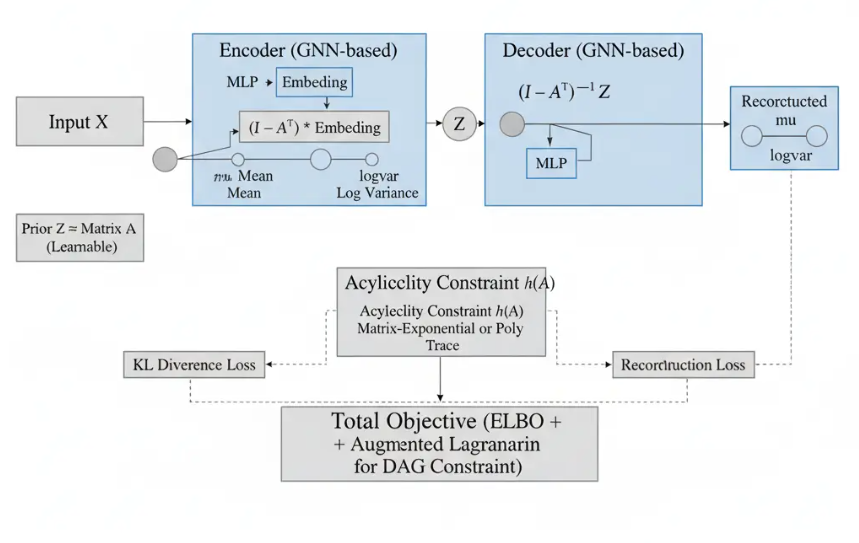
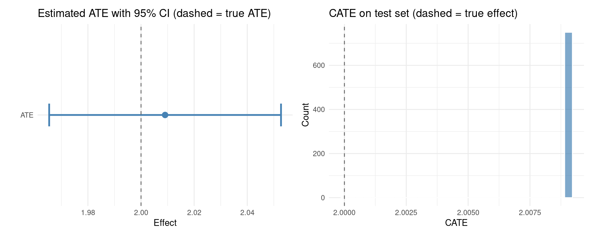

5.3.2 DAG-GNN: DAG Structure Learning with Graph Neural Networks
DAG-GNN (Yu et al., ICML 2019) learns the structure of a Directed Acyclic Graph (DAG) from observational data by embedding the problem inside a deep generative model. Where NOTEARS replaces a combinatorial graph search with a smooth optimization over a weighted adjacency matrix \(\mathbf{W}\), DAG-GNN goes a step further: it wraps that adjacency matrix inside a Variational Autoencoder (VAE) driven by Graph Neural Network (GNN) encoder and decoder modules, so that representation learning and structure learning are trained end-to-end.
The key insight is that under a linear Structural Equation Model (SEM), \(\mathbf{X} = \mathbf{A}^\top \mathbf{X} + \mathbf{Z}\), the mapping from noise \(\mathbf{Z}\) to observations \(\mathbf{X}\) is exactly \((\mathbf{I} - \mathbf{A}^\top)^{-1}\mathbf{Z}\). DAG-GNN makes this causal forward pass the decoder of the VAE, and uses a GNN-filtered MLP as the encoder. The adjacency matrix \(\mathbf{A}\) is a learnable parameter shared between encoder and decoder, so gradient descent simultaneously fits the data and discovers the graph.
Acyclicity is enforced by the same differentiable constraint family as NOTEARS — \(h(\mathbf{A}) = 0\) iff the graph is a DAG — embedded as an augmented Lagrangian penalty in the ELBO objective. This notebook demonstrates the full pipeline: data simulation, model training with stable augmented Lagrangian updates, structure recovery, and downstream causal effect estimation.

Implementation in R
The CausalML R package provides tools for causal inference, structure learning, and treatment effect estimation. In particular, the package includes an R port of DAG-GNN (R/causalDeepNet.R), which leverages the torch library to enable deep neural network-based learning of Directed Acyclic Graphs (DAGs) from data. CausalML offers a unified interface to instantiate, train, and evaluate models for causal structure discovery and effect estimation.
Setup
Code
# Packages used in this notebook (SEMgraph/bnlearn omitted — not referenced here,# and SEMgraph depends on Bioconductor 'graph', which is not yet on CRAN for R 4.6)packages<-c("torch", "igraph", "tidyverse", "ggraph","corrplot", "patchwork", "RCausalML")# Install missing packages# new_packages <- packages[!(packages %in% installed.packages()[, "Package"])]# if (length(new_packages)) install.packages(new_packages)# Verify installationcat("Installed packages:\n")
# Normalize (important for VAE)df_norm<-as.data.frame(scale(df[, 1:6]))# Only normalize featuresdf_norm$T<-df$Tdf_norm$Y<-df$Y
Data split
Structure learning uses all data (unsupervised). For CATE validation we split later.
Code
# Split into train, validate and testset.seed(42)train_idx<-sample(1:nrow(df_norm), size =floor(0.7*nrow(df_norm)))temp_idx<-setdiff(1:nrow(df_norm), train_idx)valid_idx<-sample(temp_idx, size =floor(0.5*length(temp_idx)))test_idx<-setdiff(temp_idx, valid_idx)train_df<-df_norm[train_idx, ]valid_df<-df_norm[valid_idx, ]test_df<-df_norm[test_idx, ]# Structure learning uses the m node columns (X0..Xm-1)node_cols<-paste0("X", 0:5)X_train<-torch_tensor(as.matrix(train_df[, node_cols]), dtype =torch_float32(), device =DEVICE_TYPE)X_valid<-torch_tensor(as.matrix(valid_df[, node_cols]), dtype =torch_float32(), device =DEVICE_TYPE)X_test<-torch_tensor(as.matrix(test_df[, node_cols]), dtype =torch_float32(), device =DEVICE_TYPE)
DAG-GNN Model Architecture
DAG-GNN frames causal structure learning as a Variational Autoencoder (VAE) whose latent space is organized by a learnable adjacency matrix \(\mathbf{A}\). The architecture has four tightly coupled components, illustrated in the figure above.
Encoder (GNN-based)
The encoder maps the observed data matrix \(\mathbf{X} \in \mathbb{R}^{n \times d}\) to a latent distribution \(q_\phi(\mathbf{Z} \mid \mathbf{X})\). It proceeds in two steps:
MLP embedding — a per-node MLP projects each variable’s observations into a shared embedding space: \(\mathbf{H} = \mathrm{MLP}_\phi(\mathbf{X})\).
Graph filtering — the embedding is mixed across nodes using the graph structure encoded in \(\mathbf{A}\): \(\tilde{\mathbf{H}} = (\mathbf{I} - \mathbf{A}^\top) \cdot \mathbf{H}\). This multiplication propagates information along the reverse of the directed edges, so each node aggregates messages from its children — implementing one step of GNN message passing.
The filtered embedding is then projected to the mean\(\boldsymbol{\mu}\) and log-variance\(\log \boldsymbol{\sigma}^2\) of the approximate posterior, from which the latent code \(\mathbf{Z}\) is sampled via the reparameterization trick.
Prior and Latent Code
Rather than a fixed standard Gaussian, DAG-GNN uses a learnable prior\(p(\mathbf{Z}) = \mathcal{N}(0, \mathbf{A})\), where the adjacency matrix \(\mathbf{A}\) itself is a free parameter optimized jointly with the encoder and decoder weights. This encodes the assumption that the data-generating structure — the DAG — should shape the prior distribution over latent codes.
Decoder (GNN-based)
The decoder reconstructs \(\mathbf{X}\) from \(\mathbf{Z}\) by inverting the structural equation: \(\hat{\mathbf{X}} = (\mathbf{I} - \mathbf{A}^\top)^{-1} \mathbf{Z}\). This is the closed-form solution to the linear SEM \(\mathbf{X} = \mathbf{A}^\top \mathbf{X} + \mathbf{Z}\), meaning the decoder explicitly models the causal forward pass. A subsequent MLP further refines the reconstruction, outputting the reconstructed mean \(\hat{\boldsymbol{\mu}}\) and log-variance \(\widehat{\log \boldsymbol{\sigma}^2}\).
Acyclicity Constraint \(h(\mathbf{A})\)
For \(\mathbf{A}\) to encode a valid DAG, the acyclicity constraint \(h(\mathbf{A}) = 0\) must hold. The R implementation in causalDeepNet.R (v2) uses the matrix polynomial formulation:
which equals zero if and only if the graph is acyclic and is differentiable with respect to \(\mathbf{A}\). (The matrix-exponential form from the original paper, \(h(\mathbf{A}) = \mathrm{tr}(e^{\mathbf{A} \odot \mathbf{A}}) - d\), is mathematically equivalent but less numerically stable at large \(d\).)
The effective adjacency used during training is \(\mathbf{A}_{\mathrm{eff}} = \tanh(\mathbf{A}) \times 0.5\), which keeps entries in \((-0.5, 0.5)\) and replaces the earlier sinh-based formulation for numerical stability.
The reconstruction loss\(-\mathbb{E}[\log p_\theta(\mathbf{X} \mid \mathbf{Z})]\) measures how well the decoder recovers \(\mathbf{X}\) from the sampled \(\mathbf{Z}\).
The KL divergence\(\mathrm{KL}[q_\phi \| p]\) regularizes the encoder toward the learnable prior, which is itself shaped by \(\mathbf{A}\).
The augmented Lagrangian penalty\(\lambda\, h(\mathbf{A}) + \frac{c}{2}\, h(\mathbf{A})^2\) enforces acyclicity. The multiplier \(\lambda\) is updated by dual ascent at every step; the penalty coefficient \(c\) is increased (up to a cap of \(10^6\)) only when \(|h(\mathbf{A})|\) fails to decrease sufficiently — a throttled schedule (every 25 epochs) that prevents the penalty from exploding early in training.
Additional stability measures in the R implementation include gradient clipping (max-norm 1.0), a Huber regularizer on \(\mathbf{A}\), and tryCatch guards around the forward pass to skip singular steps without poisoning the dual variable \(\lambda\).
After training, the binary adjacency is recovered by thresholding the effective adjacency at \(|\mathbf{A}_{\mathrm{eff}}| > 0.10\).
Code
# Instantiate the DAGGNN model for 6 nodes (default hyperparameters).model<-make_daggnn(n_nodes =6, device =DEVICE_TYPE)
Training with Augmented Lagrangian
The training objective is \(\mathcal{L}_c = -\mathrm{ELBO} + \lambda\, h(\mathbf{A}) + \frac{c}{2}\, h(\mathbf{A})^2 + \epsilon_{\mathrm{Huber}}(\mathbf{A})\). The dual variable \(\lambda\) is updated by gradient ascent at every step; the penalty coefficient \(c\) is multiplied by \(\eta = 10\) only when \(|h(\mathbf{A}_k)| > \gamma\, |h(\mathbf{A}_{k-1})|\) at the throttle interval (every 25 epochs), and capped at \(10^6\) to prevent explosion. Gradient clipping (max-norm 1.0) and tryCatch guards around the forward pass protect against numerical singularities without corrupting \(\lambda\).
Code
torch_manual_seed(42L)optimizer<-optim_adam(model$parameters, lr =1e-3)lambda_h<-0.0c<-1.0eta<-10.0gamma<-0.25n_epochs<-600h_prev<-NULLmax_c<-1e6c_update_freq<-25X_train_fixed<-X_train[, 1:model$n_nodes]loss_history<-numeric(n_epochs)h_history<-numeric(n_epochs)for(epochinseq_len(n_epochs)){model$train()optimizer$zero_grad()out<-tryCatch(model$forward(X_train_fixed), error =function(e)NULL)if(is.null(out))nextloss<-model$elbo_loss(X_train_fixed, out$MX, out$MZ)h_val<-model$h_func()loss_num<-as.numeric(loss)h_num<-as.numeric(h_val)if(!is.finite(loss_num))nexthuber_reg<-torch_mean(torch_sqrt((model$A)^2+1e-4)-1e-2)if(is.finite(h_num)){aug_loss<-loss+lambda_h*h_val+0.5*c*(h_val^2)+1e-4*huber_reg}else{aug_loss<-loss+1e-4*huber_reg}aug_loss$backward()torch::nn_utils_clip_grad_norm_(model$parameters, max_norm =1.0)optimizer$step()loss_history[epoch]<-loss_numh_history[epoch]<-if(is.finite(h_num))h_numelseNA_real_if(is.finite(h_num))lambda_h<-lambda_h+c*h_numif(epoch%%c_update_freq==0&&is.finite(h_num)){if(!is.null(h_prev)&&is.finite(h_prev)&&abs(h_num)>gamma*abs(h_prev))c<-min(eta*c, max_c)h_prev<-h_num}if(epoch%%100==0){cat(sprintf("Epoch %4d | Loss %8.4f | h %.6f | c %.2e\n",epoch, loss_num, if(is.finite(h_num))h_numelseNaN, c))}}
Epoch 100 | Loss 1.1560 | h 0.002306 | c 1.00e+03
Epoch 200 | Loss 0.3247 | h 0.000049 | c 1.00e+06
Epoch 300 | Loss 0.1753 | h 0.000000 | c 1.00e+06
Epoch 400 | Loss 0.1181 | h 0.000000 | c 1.00e+06
Epoch 500 | Loss 0.0826 | h 0.000000 | c 1.00e+06
Epoch 600 | Loss 0.0548 | h 0.000000 | c 1.00e+06
After learning the DAG, we estimate the Average Treatment Effect (ATE) and Conditional Average Treatment Effect (CATE) from observational data, using the learned DAG’s confounders (X0–X3) for adjustment.
Code
# Build a directed graph using igraph: each edge (i,j) in A_binary is an edge from X_i to X_jcausal_graph<-graph_from_adjacency_matrix(A_binary, mode ="directed")V(causal_graph)$name<-paste0("X", 0:5)# Output the learned graph edgesedges_df<-get.data.frame(causal_graph)print("Learned causal graph edges:")
# Causal Inference: ATE and CATE estimation with train/test validationcov_cols<-c("X0", "X1", "X2", "X3")X_train_cov<-as.matrix(train_df[, cov_cols])X_test_cov<-as.matrix(test_df[, cov_cols])treatment_train<-train_df$Ttreatment_test<-test_df$Ty_train<-train_df$Yy_test<-test_df$Y# Ensure control group is present in treatment vectorunique_treatments<-unique(treatment_train)cat(sprintf("Unique values in treatment_train: %s\n", paste(unique_treatments, collapse =", ")))
Unique values in treatment_train: 0, 1
Code
# If treatment codes are not {0, 1}, recode so that 0 is control, 1 is treatedif(!setequal(unique_treatments, c(0, 1))){min_val<-min(unique_treatments)max_val<-max(unique_treatments)treatment_train_bin<-as.numeric(treatment_train==max_val)treatment_test_bin<-as.numeric(treatment_test==max_val)cat(sprintf("Relabeling treatments: control=%s->0, treated=%s->1\n", min_val, max_val))}else{treatment_train_bin<-treatment_traintreatment_test_bin<-treatment_test}# Fit on train using Linear Regression (equivalent to LRSRegressor)# Model: Y ~ T + Xlm_formula<-as.formula(paste("y_train ~ treatment_train_bin +", paste(cov_cols, collapse =" + ")))lm_data<-data.frame(y_train, treatment_train_bin, X_train_cov)colnames(lm_data)[3:6]<-cov_colslr_model<-lm(lm_formula, data =lm_data)# Predict CATE on test setcate_coef<-coef(lr_model)["treatment_train_bin"]cate_arr<-rep(cate_coef, nrow(X_test_cov))ate_val<-mean(cate_arr)# 95% CI for ATE from test CATEsse_ate<-summary(lr_model)$coefficients["treatment_train_bin", "Std. Error"]ci_lb<-ate_val-1.96*se_ateci_ub<-ate_val+1.96*se_atecat("=== ATE on test set (model fitted on train) ===\n")
=== ATE on test set (model fitted on train) ===
Code
true_ate<-2.0cat(sprintf("Estimated ATE (true ATE = %s): %.4f\n", true_ate, ate_val))
The following figures summarize the learned structure, training dynamics, and causal effect estimates.
True vs learned DAG
Code
node_labels<-paste0("X", 0:5)# True DAG (binary for structure comparison)A_true_bin<-(A_true!=0)*1G_true<-graph_from_adjacency_matrix(A_true_bin, mode ="directed")V(G_true)$name<-node_labels# Learned DAG (already computed as causal_graph / A_binary)G_learned<-graph_from_adjacency_matrix(A_binary, mode ="directed")V(G_learned)$name<-node_labelsp1<-ggraph(G_learned, layout ="fr")+geom_edge_link(arrow =arrow(length =unit(3, "mm"), ends ="last"), color ="steelblue")+geom_node_point(color ="steelblue", size =6)+geom_node_text(aes(label =name), vjust =1.5)+theme_void()+ggtitle("Learned DAG (DAG-GNN)")p2<-ggraph(G_true, layout ="fr")+geom_edge_link(arrow =arrow(length =unit(3, "mm"), ends ="last"), color ="darkgreen")+geom_node_point(color ="darkseagreen", size =6)+geom_node_text(aes(label =name), vjust =1.5)+theme_void()+ggtitle("True DAG (data-generating)")p1+p2
Figure 1: True DAG (data-generating) vs learned DAG by DAG-GNN.
Adjacency matrices: true vs learned
Code
par(mfrow =c(1, 2), mar =c(2, 2, 3, 2))rownames(A_true)<-colnames(A_true)<-node_labelsrownames(A_learned)<-colnames(A_learned)<-node_labelsrownames(A_binary)<-colnames(A_binary)<-node_labels# Ensure no NA and non-constant range for corrplot (avoids internal NA in color scale)A_true_plot<-replace(A_true, is.na(A_true), 0)A_binary_plot<-replace(A_binary, is.na(A_binary), 0)r_true<-range(A_true_plot)r_bin<-range(A_binary_plot)if(diff(r_true)==0)r_true<-c(r_true[1], r_true[1]+1)if(diff(r_bin)==0)r_bin<-c(0, 1)corrplot(A_true_plot, is.corr =FALSE, method ="color", tl.col ="black", title ="True adjacency (weighted)", mar =c(0, 0, 1, 0), col.lim =r_true)corrplot(A_binary_plot, is.corr =FALSE, method ="color", tl.col ="black", title ="Learned adjacency (thresholded)", mar =c(0, 0, 1, 0), col.lim =r_bin)par(mfrow =c(1, 1))
Figure 2: True (weighted) and learned (effective, thresholded) adjacency matrices.
Training curves
Code
df_curves<-data.frame( epoch =rep(1:n_epochs, 2), value =c(loss_history, h_history), metric =rep(c("ELBO loss", "h(A) acyclicity"), each =n_epochs))p_loss<-ggplot(df_curves%>%filter(metric=="ELBO loss"), aes(x =epoch, y =value))+geom_line(color ="steelblue", linewidth =0.5)+theme_minimal()+labs(x ="Epoch", y ="Loss", title ="Training: ELBO loss")p_h<-ggplot(df_curves%>%filter(metric=="h(A) acyclicity"), aes(x =epoch, y =value))+geom_line(color ="darkgreen", linewidth =0.5)+theme_minimal()+labs(x ="Epoch", y ="h(A)", title ="Acyclicity constraint h(A)")p_loss/p_h
Figure 3: ELBO loss and acyclicity constraint h(A) over training epochs.
ATE and CATE summary
Code
# ATE with 95% CIdf_ate<-data.frame( estimate ="ATE", value =ate_val, ci_lower =ci_lb, ci_upper =ci_ub, true_ate =true_ate)p_ate<-ggplot(df_ate, aes(x =estimate, y =value))+geom_point(size =3, color ="steelblue")+geom_errorbar(aes(ymin =ci_lower, ymax =ci_upper), width =0.15, linewidth =1, color ="steelblue")+geom_hline(aes(yintercept =true_ate), linetype ="dashed", color ="gray40")+theme_minimal()+labs(x ="", y ="Effect", title ="Estimated ATE with 95% CI (dashed = true ATE)")+coord_flip()# CATE distributiondf_cate<-data.frame(cate =cate_arr)p_cate<-ggplot(df_cate, aes(x =cate))+geom_histogram(bins =30, fill ="steelblue", alpha =0.7, color ="white")+geom_vline(xintercept =true_ate, linetype ="dashed", color ="gray40")+theme_minimal()+labs(x ="CATE", y ="Count", title ="CATE on test set (dashed = true effect)")p_ate+p_cate

Figure 4: Estimated ATE with 95% CI and distribution of CATE on test set.
Summary and conclusion
DAG-GNN turns the notoriously hard DAG-learning problem into a differentiable VAE + GNN optimization. The R implementation in R/causalDeepNet.R (v2) uses tanh(A)×0.5 effective adjacency and stable training (throttled penalty c, gradient clipping, NaN/singularity guards), so it scales to real data (see Sachs and Wine case studies). In production:
Run DAG-GNN on your observational dataset.
Threshold the learned effective adjacency (default 0.10 for the tanh×0.5 scale) to obtain a sparse causal DAG.
Feed the DAG into DoWhy / EconML / CausalML (or R equivalents like grf, tmle) for effect estimation, sensitivity analysis, or counterfactuals.
Especially powerful when you have many covariates and suspect nonlinear confounding.
Resources
Paper: Yu, Y., Chen, J., Gao, T., & Yu, M. (2019). DAG-GNN: DAG Structure Learning with Graph Neural Networks. ICML. arXiv:1904.10098
Note: This R Quarto notebook was converted from the original Python IPython notebook, maintaining the same structure and functionality while leveraging R’s torch and tidyverse ecosystems.